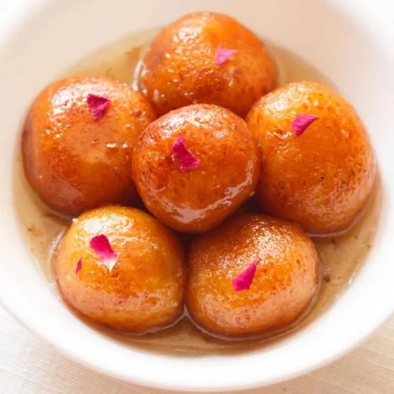
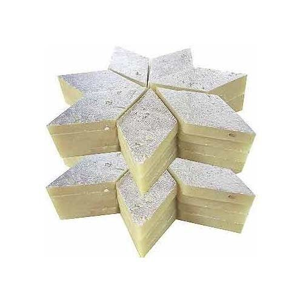

Gulab Jamun
Ingredients
- 1 cup Milk powder
- 1/4 cup maida
- 1 tablespoon ghee
- 1/4 cup milk
- 1/4 teaspoon baking soda
Recipe
- Boil 1.5 cups of milk and set aside to cool.
- In a mixing bowl, combine milk powder, maida, ghee, and baking soda.
- Gradually add the cooled milk to the mixture and knead it into a smooth dough.
- Divide the dough into small portions and shape them into smooth balls.

Kaju katli
Ingredients
- 200g Raw cashews
- 150g Sugar
- 1/4 cup water
- Silver foil
- 1 tsp oil
Recipe
- Grind: Pulse cashew in a blender into a fine powder.
- Sieve: Strain the powder to remove any large lumps.
- Syrup: Boil sugar and water in a pan until dissolved.
- Mix: Combine the cashew powder with the syrup and oil.
- Cook: Cook the mixture on low heat for 5-7 minutes until it thickens.
- Roll: Transfer the mixture to a greased surface and roll it out with a rolling pin.
- Cut: Cut the rolled mixture into diamond shapes and garnish with silver foil.
- Serve: Allow the kaju katli to cool completely before serving.
- Store: Store in an airtight container for up to a week.
